This page describes changes in KKT system after addition of inequality constraint to the active set.
Update of Cholesky factor
Let 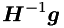 be the normal to the i-th inequality constraint (assumed to be a simple bound). Define the matrix
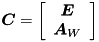
where the rows of 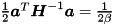 contain the normals to the inequality constraints in the working set.
If a new constraint must be added to the active set, then the Schur complement must be updated:
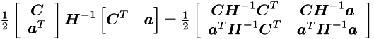
In general the last line is
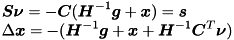
Note that is a vector of zeros. While is a scalar.
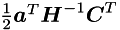 selects and scales one column of E, this column corresponds to ZMP coordinates and can have at most 4 non-zero elements.
The total number of non-zero elements in the new row of Schur complement is 5 or 3 (for the last state in the preview window).
Algorithm of Cholesky factor update
Input:
m_e % the number of equality constraints
m_a % the current cardinality of the active set
L % Cholesky factor
s_a % a row added to the Schur complement
Output:
l % a new (the last) row of L
l = s_a
first % the index of the first !=0 element of s_a
end = m_e + m_a + 1 % the index of the last element of s_a
for i = l_s:m_e
l(i) = l(i) / L(i,i)
l(end) = l(end) - l(i)^2
% Since ecL is sparse, no more than three subsequent elements with
% (known) indexes 'k' <= 'end' in 'l' must be updated:
l(k) = l(k) - l(i) * L(k,i)
for j = m_e+1:end-1
l(j) = l(j) - l(i) * L_(j,i)
end
end
for i = m_e+1:end-1
l(i) = l(i) / L(i,i)
l(end) = l(end) - l(i)^2
for j = i+1:end-1
l(j) = l(j) - l(i) * L(j,i)
end
end
l(end) = sqrt(l(end))
Update of z
After Cholesky decomposition we get 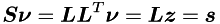
When a constraint is added to the active set, there is no need to perform full forward substitution in order to form 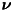 (but full backward substitution is still required).
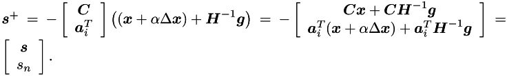
Note that 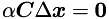, because  is in the null space of the normals to the active constraints (stored in 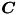). Hence, given 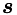, computing 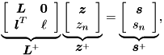 amounts to performing two multiplications plus one addition (note that is constant, and 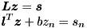 is already formed).
is in the null space of the normals to the active constraints (stored in 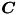). Hence, given 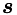, computing 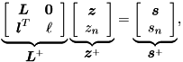 amounts to performing two multiplications plus one addition (note that is constant, and 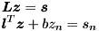 is already formed).
Now consider the forward substitution
where 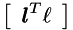 is an appended row. These are two equations
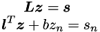
From the second one we can compute (note that  )
)

Hence, forming  amounts to performing one dot product.
amounts to performing one dot product.